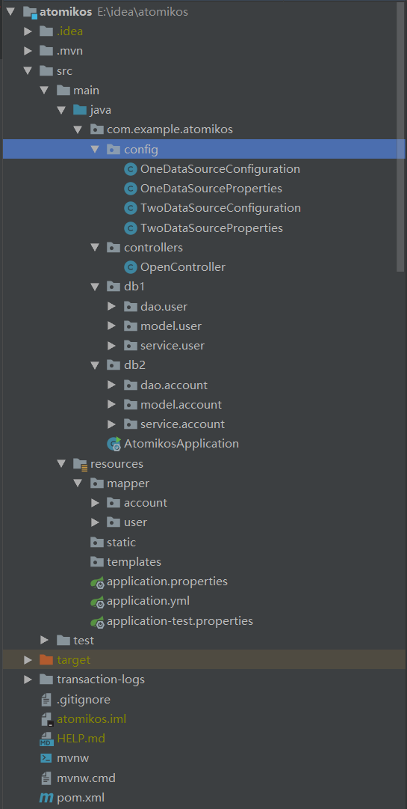

场景：现有两个不同的数据库，一个叫db_user，一个叫db_account。一个操作，要同时更新db_user的user表和db_account的account表。失败，则两个表一起回滚。
项目目录： 
com.example.atomikos.config 数据源配置信息com.example.atomikos.db1 数据库db_user的业务和对象com.example.atomikos.db2 数据库db_account的业务和对象resources/mapper/user db_user数据库的映射文件resources/mapper/account db_account数据库的映射文件
pom.xml 1 2 3 4 5 6 7 8 9 10 11 12 13 14 15 16 17 18 19 20 21 22 23 24 25 26 27 28 29 30 31 32 33 34 35 36 37 38 39 40 41 42 43 44 45 46 47 48 49 50 51 52 53 54 55 56 57 58 59 60 61 62 63 64 65 66 67 68 69 70 71 72 73 74 75 76 77 78 79 80 81 82 83 84 85 86 87 88 89 90 91 92 93 94 95 96 97 98 99 100 101 102 103 104 105 106 107 108 109 110 111 112 113 114 115 116 117 118 119 120 121 122 123 124 125 126 127 128 129 130 131 132 133 134 135 136 137 138 139 140 141 142 143 144 145 146 147 148 <? xml version="1.0" encoding="UTF-8" ?> <project xmlns ="http://maven.apache.org/POM/4.0.0" xmlns:xsi ="http://www.w3.org/2001/XMLSchema-instance" xsi:schemaLocation ="http://maven.apache.org/POM/4.0.0 https://maven.apache.org/xsd/maven-4.0.0.xsd" > <modelVersion > 4.0.0</modelVersion > <parent > <groupId > org.springframework.boot</groupId > <artifactId > spring-boot-starter-parent</artifactId > <version > 2.1.11.RELEASE</version > <relativePath /> </parent > <groupId > com.example</groupId > <artifactId > atomikos</artifactId > <version > 0.0.1-SNAPSHOT</version > <name > atomikos</name > <description > Demo project for Spring Boot</description > <properties > <java.version > 1.8</java.version > </properties > <dependencies > <dependency > <groupId > org.springframework.boot</groupId > <artifactId > spring-boot-starter-web</artifactId > </dependency > <dependency > <groupId > org.mybatis.spring.boot</groupId > <artifactId > mybatis-spring-boot-starter</artifactId > <version > 1.3.2</version > </dependency > <dependency > <groupId > mysql</groupId > <artifactId > mysql-connector-java</artifactId > <version > 5.1.38</version > </dependency > <dependency > <groupId > com.alibaba</groupId > <artifactId > druid-spring-boot-starter</artifactId > <version > 1.1.9</version > </dependency > <dependency > <groupId > org.springframework.boot</groupId > <artifactId > spring-boot-starter-jta-atomikos</artifactId > </dependency > <dependency > <groupId > org.springframework.boot</groupId > <artifactId > spring-boot-configuration-processor</artifactId > <optional > true</optional > </dependency > <dependency > <groupId > org.projectlombok</groupId > <artifactId > lombok</artifactId > <version > 1.18.0</version > </dependency > <dependency > <groupId > junit</groupId > <artifactId > junit</artifactId > <version > 4.12</version > <scope > test</scope > </dependency > <dependency > <groupId > jakarta.persistence</groupId > <artifactId > jakarta.persistence-api</artifactId > <version > 2.2.3</version > </dependency > <dependency > <groupId > tk.mybatis</groupId > <artifactId > mapper</artifactId > <version > 3.5.3</version > </dependency > <dependency > <groupId > tk.mybatis</groupId > <artifactId > mapper-spring-boot-autoconfigure</artifactId > <version > 1.2.4</version > </dependency > </dependencies > <build > <plugins > <plugin > <groupId > org.springframework.boot</groupId > <artifactId > spring-boot-maven-plugin</artifactId > </plugin > <plugin > <groupId > org.mybatis.generator</groupId > <artifactId > mybatis-generator-maven-plugin</artifactId > <version > 1.3.2</version > <configuration > <configurationFile > ${basedir}/src/main/resources/generator/generatorConfig.xml</configurationFile > <overwrite > true</overwrite > <verbose > true</verbose > </configuration > </plugin > <plugin > <artifactId > maven-resources-plugin</artifactId > <version > 2.7</version > <configuration > <delimiters > <delimiter > @</delimiter > </delimiters > <useDefaultDelimiters > false</useDefaultDelimiters > <nonFilteredFileExtensions > <nonFilteredFileExtension > ico</nonFilteredFileExtension > </nonFilteredFileExtensions > </configuration > </plugin > </plugins > </build > <profiles > <profile > <id > dev</id > <activation > <activeByDefault > true</activeByDefault > </activation > <properties > <env > dev</env > </properties > </profile > <profile > <id > test</id > <properties > <env > test</env > </properties > </profile > <profile > <id > pro</id > <properties > <env > pro</env > </properties > </profile > </profiles > </project >
连接的mysql数据库是5.7的，因此使用 mysql-connector-java的是5.1的版本，而mysql 6以上的数据库则需要使用 mysql-connector-java6.0以上，对应的驱动为 com.mysql.cj.jdbc.Driver
application.yml 1 2 3 4 5 6 7 8 9 10 11 12 13 server: port: 8091 spring: profiles: active: @env@ mybatis: mapper-locations: classpath:mapping/*/*.xml type-aliases-package: com.example.atomikos.model configuration: log-impl: org.apache.ibatis.logging.stdout.StdOutImpl
application-dev.yml 1 2 3 4 5 6 7 8 9 10 11 12 13 14 15 16 17 18 19 20 21 22 23 24 25 26 27 28 29 30 31 32 33 34 35 36 37 38 39 40 41 42 43 44 45 46 47 48 49 50 51 52 53 54 55 56 57 58 59 60 61 62 63 64 65 66 67 68 69 70 71 72 73 74 75 76 77 78 spring: profile: dev datasource: druid: one: driver-class-name: com.mysql.jdbc.Driver url: jdbc:mysql://116.62.14.208:3306/db_user?useUnicode=true&characterEncoding=UTF-8 username: root password: 123456 initialSize: 1 maxActive: 20 minIdle: 1 maxWait: 60000 timeBetweenEvictionRunsMillis: 60000 minEvictableIdleTimeMillis: 300000 validationQuery: SELECT 1 FROM DUAL testWhileIdle: true testOnBorrow: false testOnReturn: false filters: stat,wall,slf4j two: driver-class-name: com.mysql.jdbc.Driver url: jdbc:mysql://116.62.14.208:3306/db_account?useUnicode=true&characterEncoding=UTF-8 username: root password: 123456 initialSize: 1 maxActive: 20 minIdle: 1 maxWait: 60000 timeBetweenEvictionRunsMillis: 60000 minEvictableIdleTimeMillis: 300000 validationQuery: SELECT 1 FROM DUAL testWhileIdle: true testOnBorrow: false testOnReturn: false filters: stat,wall,slf4j
启动类 1 2 3 4 5 6 7 8 9 10 11 12 13 14 15 package com.example.atomikos;import tk.mybatis.spring.annotation.MapperScan;import org.springframework.boot.SpringApplication;import org.springframework.boot.autoconfigure.SpringBootApplication;@SpringBootApplication @MapperScan ({"com.example.atomikos.db1.dao" ,"com.example.atomikos.db2.dao" })public class AtomikosApplication public static void main (String[] args) SpringApplication.run(AtomikosApplication.class, args); } }
第一个数据源配置Properties 1 2 3 4 5 6 7 8 9 10 11 12 13 14 15 16 17 18 19 20 21 22 23 24 25 26 27 package com.example.atomikos.config;import lombok.Data;import org.springframework.boot.context.properties.ConfigurationProperties;import org.springframework.stereotype.Component;@Data @Component @ConfigurationProperties (prefix = "spring.datasource.druid.one" )public class OneDataSourceProperties private String driverClassName; private String url; private String username; private String password; private Integer initialSize; private Integer maxActive; private Integer minIdle; private Integer maxWait; private Integer timeBetweenEvictionRunsMillis; private Integer minEvictableIdleTimeMillis; private String validationQuery; private Boolean testWhileIdle; private Boolean testOnBorrow; private Boolean testOnReturn; private String filters; }
第二个数据源配置Properties 1 2 3 4 5 6 7 8 9 10 11 12 13 14 15 16 17 18 19 20 21 22 23 24 25 26 package com.example.atomikos.config;import lombok.Data;import org.springframework.boot.context.properties.ConfigurationProperties;import org.springframework.stereotype.Component;@Data @Component @ConfigurationProperties (prefix = "spring.datasource.druid.two" )public class TwoDataSourceProperties private String driverClassName; private String url; private String username; private String password; private Integer initialSize; private Integer maxActive; private Integer minIdle; private Integer maxWait; private Integer timeBetweenEvictionRunsMillis; private Integer minEvictableIdleTimeMillis; private String validationQuery; private Boolean testWhileIdle; private Boolean testOnBorrow; private Boolean testOnReturn; private String filters; }
第一个数据源配置 1 2 3 4 5 6 7 8 9 10 11 12 13 14 15 16 17 18 19 20 21 22 23 24 25 26 27 28 29 30 31 32 33 34 35 36 37 38 39 40 41 42 43 44 45 46 47 48 49 50 package com.example.atomikos.config;import com.alibaba.druid.pool.xa.DruidXADataSource;import org.apache.ibatis.session.SqlSessionFactory;import org.mybatis.spring.SqlSessionFactoryBean;import tk.mybatis.spring.annotation.MapperScan;import org.springframework.beans.BeanUtils;import org.springframework.beans.factory.annotation.Autowired;import org.springframework.beans.factory.annotation.Qualifier;import org.springframework.boot.jta.atomikos.AtomikosDataSourceBean;import org.springframework.context.annotation.Bean;import org.springframework.context.annotation.Configuration;import org.springframework.context.annotation.Primary;import org.springframework.core.io.support.PathMatchingResourcePatternResolver;import org.springframework.core.io.support.ResourcePatternResolver;import javax.sql.DataSource;@Configuration @MapperScan (basePackages = "com.example.atomikos.db1.dao" , sqlSessionFactoryRef = "oneSqlSessionFactory" )public class OneDataSourceConfiguration @Autowired public OneDataSourceProperties oneDataSourceProperties; @Primary @Bean (name = "oneDataSource" ) public DataSource oneDataSource () DruidXADataSource datasource = new DruidXADataSource(); BeanUtils.copyProperties(oneDataSourceProperties,datasource); AtomikosDataSourceBean xaDataSource = new AtomikosDataSourceBean(); xaDataSource.setXaDataSource(datasource); xaDataSource.setUniqueResourceName("oneDataSource" ); return xaDataSource; } @Primary @Bean (name = "oneSqlSessionFactory" ) public SqlSessionFactory oneSqlSessionFactory (@Qualifier("oneDataSource" ) DataSource oneDataSource) throws Exception { SqlSessionFactoryBean bean = new SqlSessionFactoryBean(); bean.setDataSource(oneDataSource); ResourcePatternResolver resolver = new PathMatchingResourcePatternResolver(); bean.setMapperLocations(resolver.getResources("classpath:mapper/user/*.xml" )); return bean.getObject(); } }
第二个数据源配置 1 2 3 4 5 6 7 8 9 10 11 12 13 14 15 16 17 18 19 20 21 22 23 24 25 26 27 28 29 30 31 32 33 34 35 36 37 38 39 40 41 42 43 44 package com.example.atomikos.config;import com.alibaba.druid.pool.xa.DruidXADataSource;import com.example.atomikos.config.TwoDataSourceProperties;import org.apache.ibatis.session.SqlSessionFactory;import org.mybatis.spring.SqlSessionFactoryBean;import tk.mybatis.spring.annotation.MapperScan;import org.springframework.beans.BeanUtils;import org.springframework.beans.factory.annotation.Autowired;import org.springframework.beans.factory.annotation.Qualifier;import org.springframework.boot.jta.atomikos.AtomikosDataSourceBean;import org.springframework.context.annotation.Bean;import org.springframework.context.annotation.Configuration;import org.springframework.core.io.support.PathMatchingResourcePatternResolver;import org.springframework.core.io.support.ResourcePatternResolver;import javax.sql.DataSource;@Configuration @MapperScan (basePackages = "com.example.atomikos.db2.dao" , sqlSessionFactoryRef = "twoSqlSessionFactory" )public class TwoDataSourceConfiguration @Autowired public TwoDataSourceProperties twoDataSourceProperties; @Bean (name = "twoDataSource" ) public DataSource twoDataSource () DruidXADataSource datasource = new DruidXADataSource(); BeanUtils.copyProperties(twoDataSourceProperties,datasource); AtomikosDataSourceBean xaDataSource = new AtomikosDataSourceBean(); xaDataSource.setXaDataSource(datasource); xaDataSource.setUniqueResourceName("twoDataSource" ); return xaDataSource; } @Bean (name = "twoSqlSessionFactory" ) public SqlSessionFactory twoSqlSessionFactory (@Qualifier("twoDataSource" ) DataSource twoDataSource) throws Exception { SqlSessionFactoryBean bean = new SqlSessionFactoryBean(); bean.setDataSource(twoDataSource); ResourcePatternResolver resolver = new PathMatchingResourcePatternResolver(); bean.setMapperLocations(resolver.getResources("classpath:mapper/account/*.xml" )); return bean.getObject(); } }
service层使用事务回滚演示 1 2 3 4 5 6 7 8 9 10 11 12 13 14 15 16 17 18 19 20 21 22 23 24 25 26 27 28 29 30 31 32 33 34 35 36 37 38 39 40 41 42 43 package com.example.atomikos.db1.service.user;import com.example.atomikos.db1.dao.user.UserMapper;import com.example.atomikos.db1.model.user.User;import com.example.atomikos.db2.model.account.Account;import com.example.atomikos.db2.service.account.AccountService;import org.springframework.util.StringUtils;import org.springframework.beans.factory.annotation.Autowired;import org.springframework.stereotype.Service;import javax.transaction.Transactional;import java.util.List;@Service ("userService" )public class UserService @Autowired private UserMapper userMapper; @Autowired private AccountService accountService; public Integer save (User user) return userMapper.insert(user); } @Transactional public String testAtomikos (String name) Account account = new Account(); account.setName(name); accountService.save(account); User user = new User(); user.setName(name); save(user); int i = 1 / 0 ; return "done" ; } }
注意@Transactional 引入的包是javax.transaction.Transactional
源码地址 springboot-atomikos
参考自：【十九】Spring Boot之分布式事务(JTA、Atomikos、Druid、Mybatis)
-------------本文结束